Soil and Pavement: Across America
America couldn’t be more diverse in landscape, and yet
when driving hours through the flat stretches of North Dakota, it is easy to forget how true that is. In a study of terrain, I wanted to take note of the immense change from one side of the US to the other, as well as the differences in opposing sides of the same town. A topographical nod to Robert Frank’s, The Americans, and having just read Steinbeck’s, Travels with Charley, my enthusiasm was ignited.
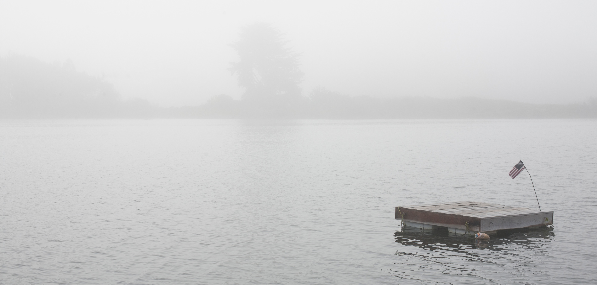
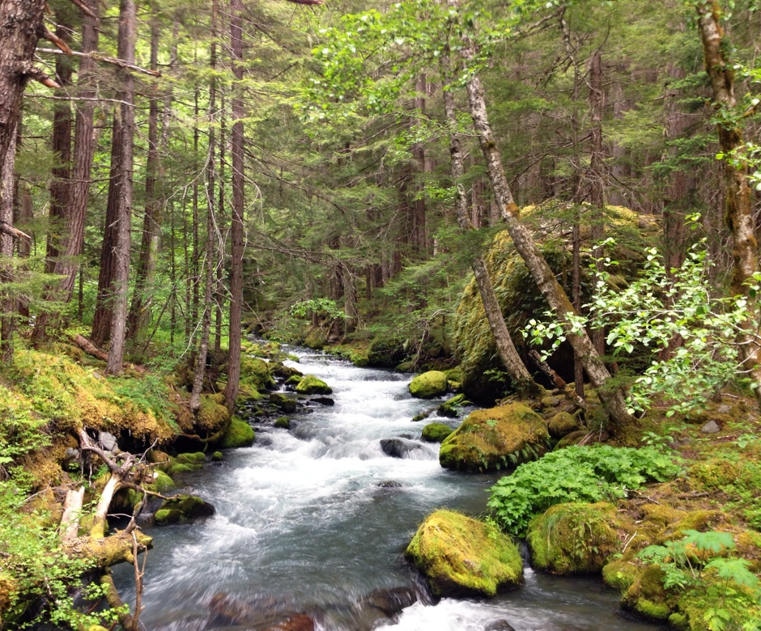
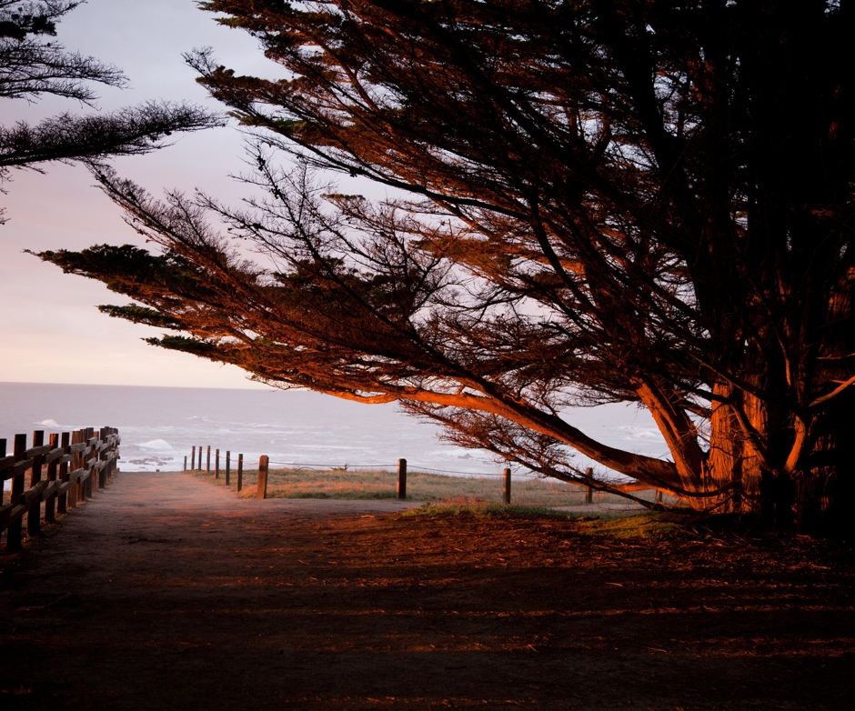
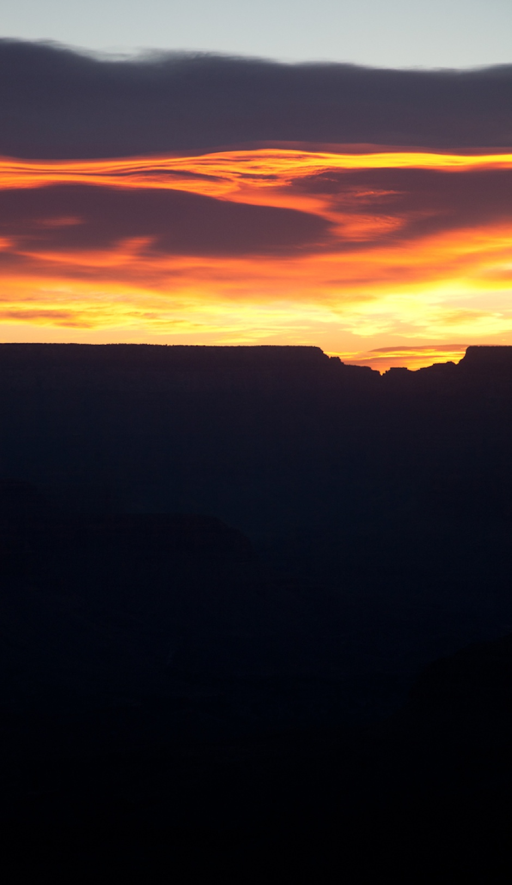
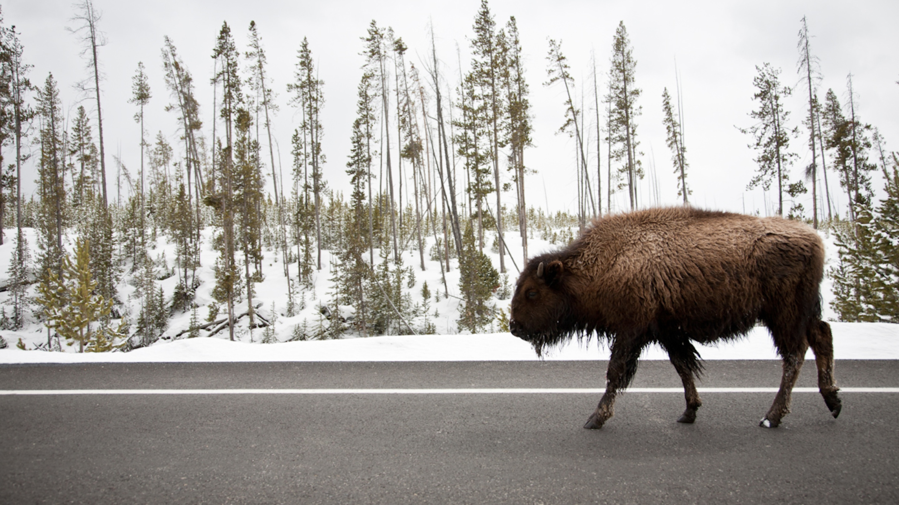
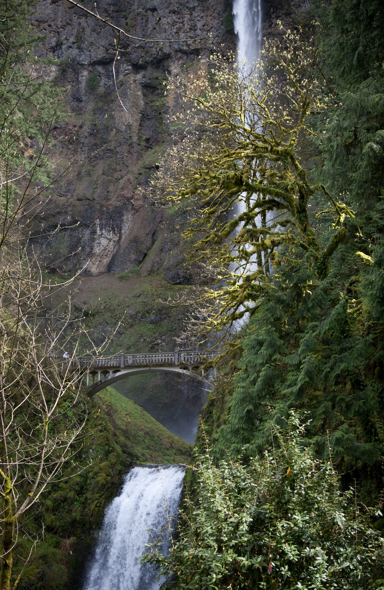
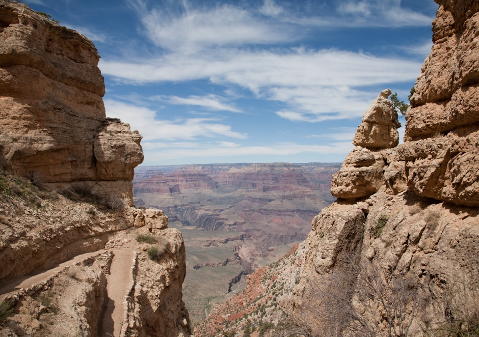
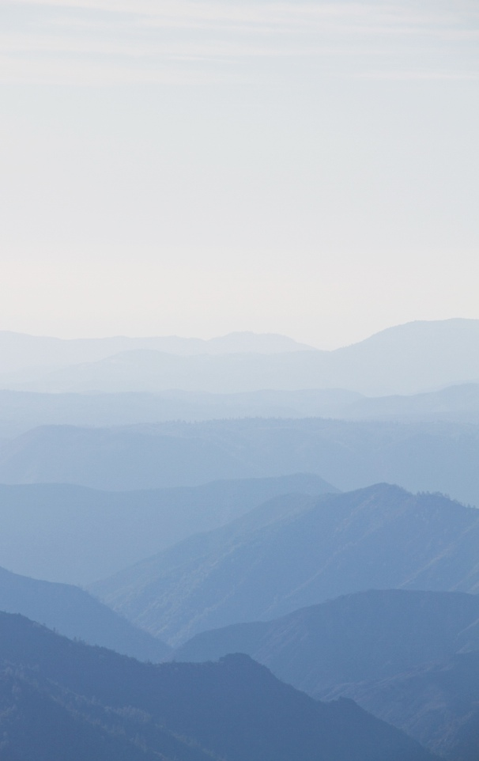
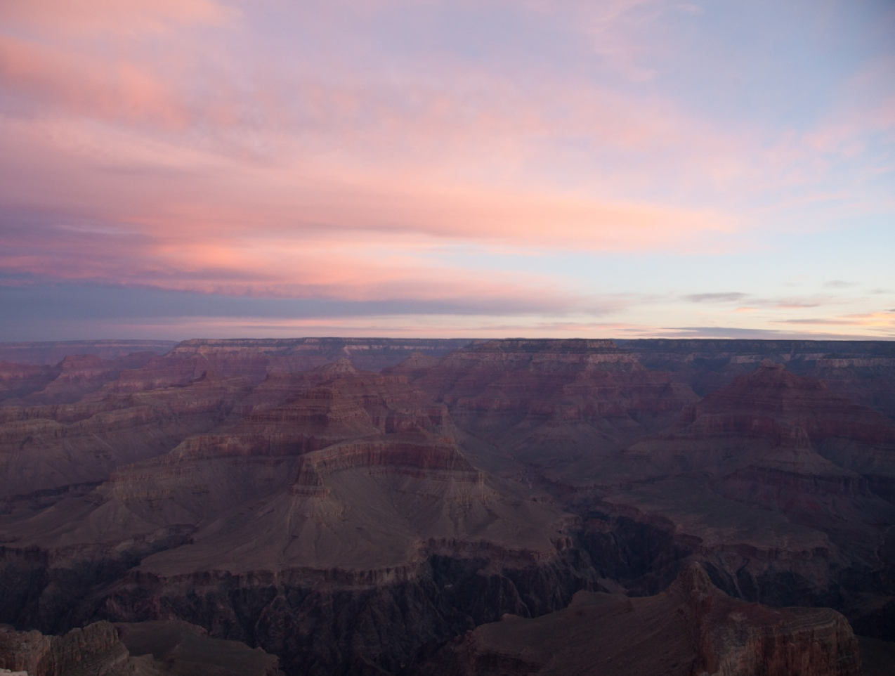
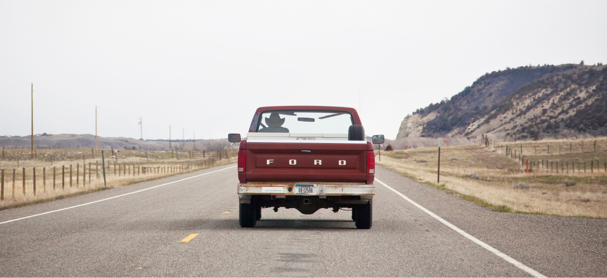
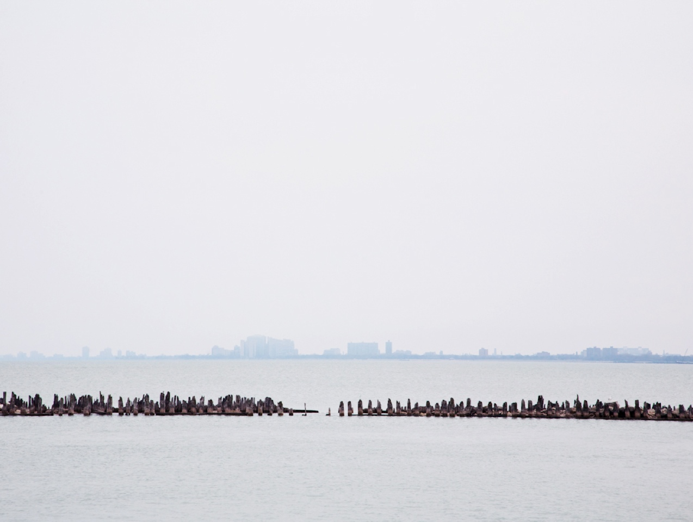
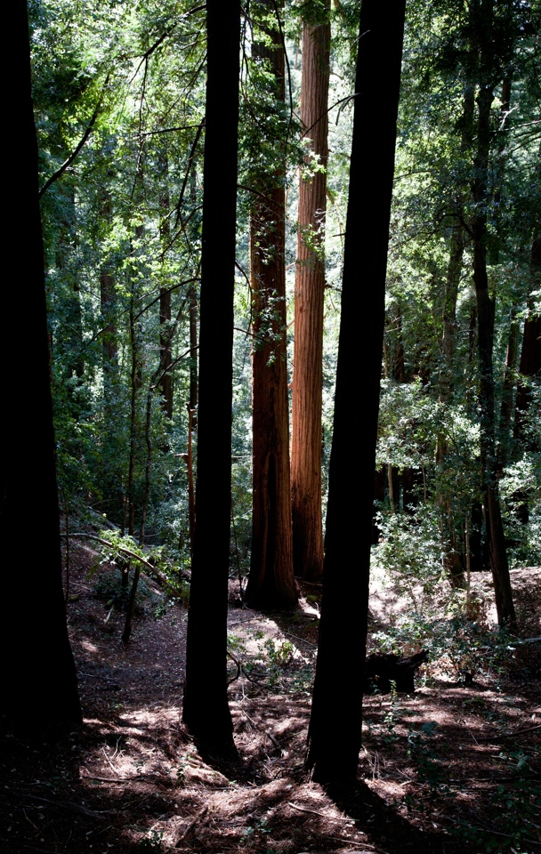
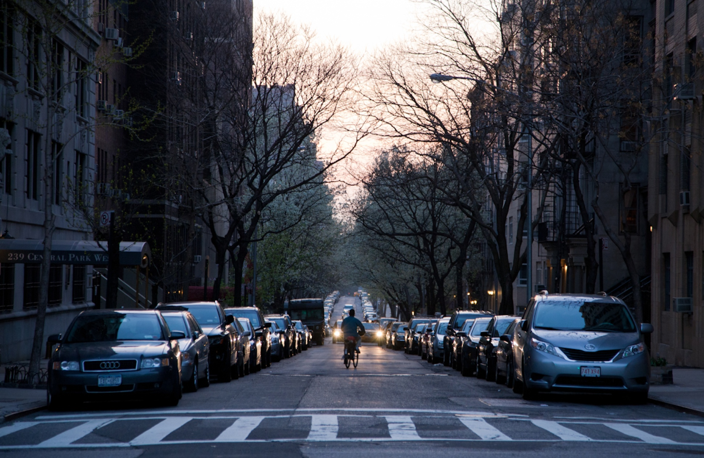